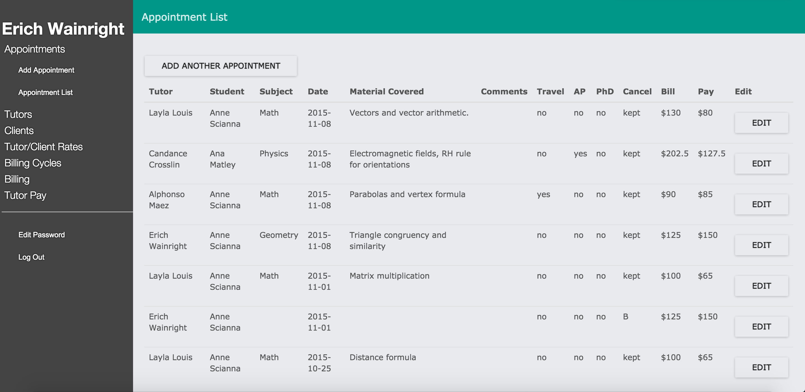
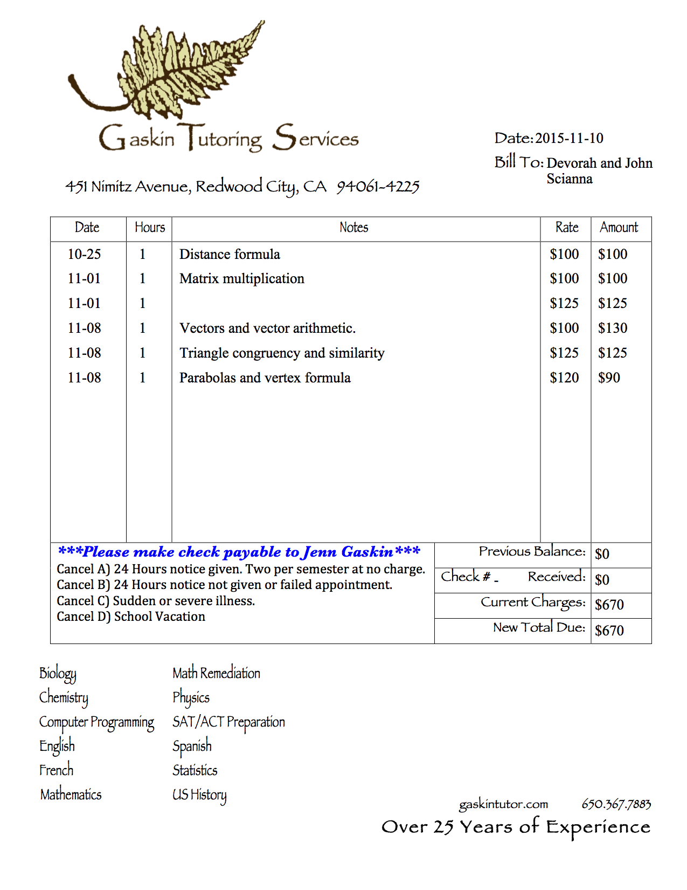
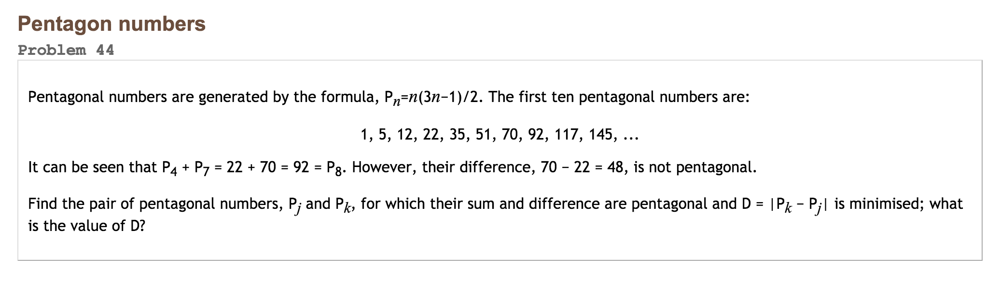
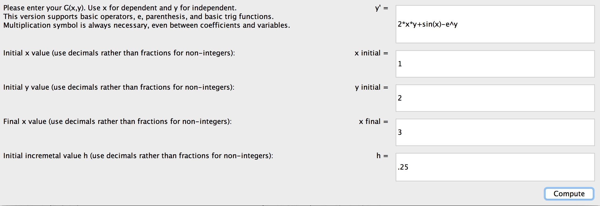
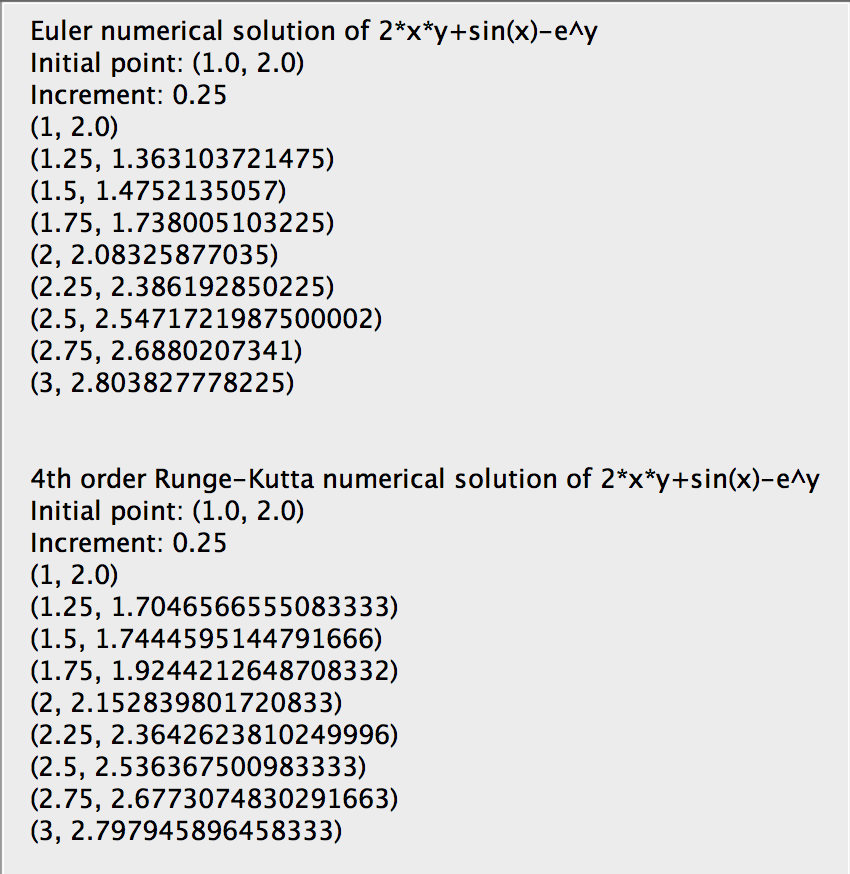

My most recent, and complex project, was a web application built for Gaskin Tutoring Services that allowed all tutors to log appointments online, and the program would track appointments, rates, clients, and fees, and handle billing automatically. The program is built with Meteor and React, which came with plenty of Javascript, Mongo, HTML, and CSS practice.
The main page showing an appointment list

An example of an autogenerated bill

The app features users, passwords, dynamic data, databasing with mongo, pdf generation, automated email, accounting, and a friendly user interface.
Having never built anything before, easily the biggest challenge was structure. I learned a lot about how to structure a larger application and how to sort files and code in a workflow conducive manner. The next challenge was learning to use the tools. I spent a lot of time with the documentation for Meteor and React as well as the other modules used (Hummus, Bootstrap, Mongo Queries, jQuery, etc). Parsing documentation is definitely a learned skill that improved greatly during this project.
Github link!Project Euler is an amazing website full of mathematically interesting puzzles that can be solved with coding. I've worked on a number of them in both Python and Java.
One of the more involved problems I solved recently

Project Euler features an excellent learning curve that allows growth as a programmer and problem solver. Along the way, the mathematically rich problems teach you new math facts, and many of the problems are conceptually connected. As many of the problems are related to primes, I've created and revised (several times) a primes class to allow the computer to work quickly with prime checking or generation.
Project Euler's big challenge is to solve each problem so that your program runs in under a minute as a rule of thumb. Generally, an elegant solution should be under 10 seconds. Much of the fun and challenge comes from scouring the internet on the mathematical subject and working with pencil and paper to get a feeling for the problem and the math. I've learned more than a few problem solving strategies, algorithms, and math facts from dynamic programming, to Euclid's LCD algorithm, to amicable numbers. The challenge that comes after finding a conceptual solution is efficient implementation and debugging. The debugging often reveals flaws in the solution that can require a complete restart!
Github link!I built a numerical solver for first-order differential equations as an honors projct using both Euler and Runge-Kutta methods.
Applet main window

Solution window

The actual numerical approximation was the easiest part of the projct. The largest part, and part I'm most proud of, is building an evaluator that could take infix notation. By the end I had support for basic arithmetic, trig functions, and exponentials. While the UI is nothing to write home about, it's functional and was quite the accomplishment as I was stilla relatively new coder at the time.
As mentioned above, the user interface, and infix notation evaluator and calculator were the most challenging aspects. I learned a lot about stacks and recursive calls as means for the calculator.
Github link!